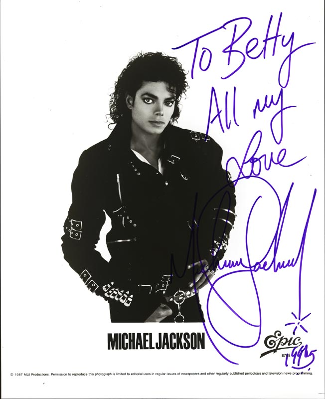
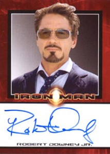
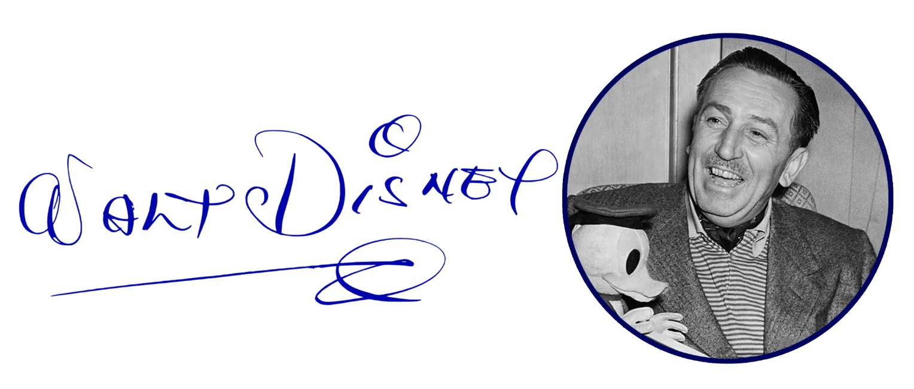

 |
Autógrafo de Michael Jackson
Su importancia es muy alta, ya que pertenece a una de las mayores figuras de la música pop,
conocido como el “Rey del Pop” y creador de álbumes icónicos como Thriller.
En el mercado, su autógrafo suele valer entre 500 y 5,000 dólares o más, dependiendo de la autenticidad,
el estado y el tipo de objeto firmado (fotos, discos, documentos, etc.).
|
 |
Autógrafo de Robert Downey Jr.
Su importancia está ligada a su impacto en el cine moderno, especialmente por su papel como Iron Man
dentro del universo de Marvel Studios, lo que lo hace muy buscado por fans.
En cuanto a valor, un autógrafo auténtico puede rondar entre 100 y 500 dólares, aunque puede subir si
está en objetos relacionados con sus películas más icónicas.
|
 |
Autógrafo de Walt Disney
Su importancia radica en que representa a uno de los grandes pioneros del
entretenimiento y creador de Mickey Mouse, por lo que es muy valorado por coleccionistas.
En el mercado, su precio suele ir aproximadamente de 1,000 a 10,000 dólares o más,
dependiendo de la autenticidad y el objeto en el que esté firmado.
|